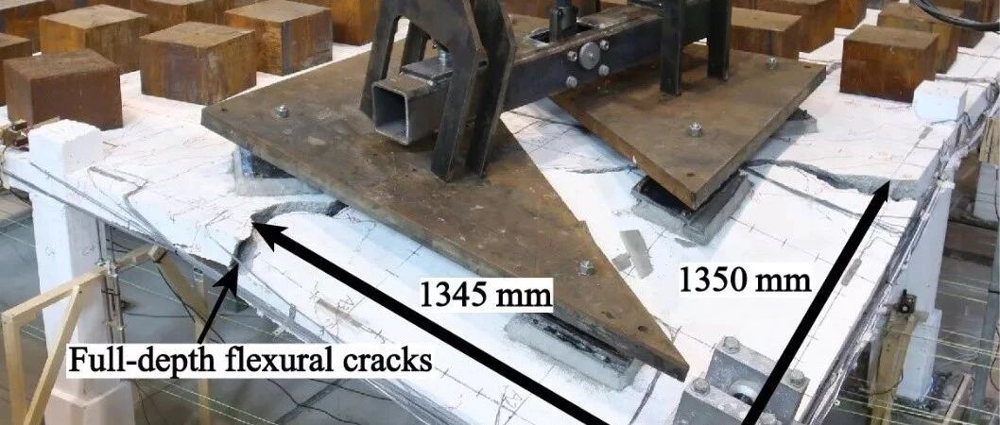

新论文：角柱失效后平板结构连续倒塌行为实验研究
角柱失效后平板结构连续倒塌行为实验研究
Experimental Study on the Progressive Collapse Behaviour of RC Flat Plate Substructures Subjected to Corner Column Removal Scenarios
Engineering Structures
论文链接：
https://www.sciencedirect.com/science/article/pii/S0141029618325598?dgcid=author
研究背景介绍
自1968年，Ronan Point公寓由煤气爆炸导致建筑结构发生连续倒塌以来（图1），有效预防结构在寿命期限内发生连续倒塌，开始引起强烈的关注。根据国际抗连续倒塌设计指导GSA和DOD的推荐，通过移除结构一个或多个关键承重构件，评估其剩余结构的承载能力，从而对结构抗连倒塌能力进行研究。基于这种方法开展了大量的试验研究，数值模拟和理论计算。但这些研究多针对于框架结构，平板结构相关的连续倒塌研究非常有限。

图1. Ronan Point apartment
钢筋混凝土平板结构（又称为无梁楼盖结构）是由楼板和柱组成的结构体系。因为其施工简单，成本低，使用空间大等优点，目前澳洲乃至世界范围内很多主要城市都大量采用此结构体系。但是这种结构体系容易在节点处发生脆性冲切破坏，进而引发建筑结构的连续倒塌。在以下3个典型的连续倒塌案例里均由于节点冲切破坏进而引发结构连续倒塌（图2、图3和图4）。

图2. 2000 Commonwealth Avenue

图3. Sampoong Department Store

图4. Pipers Row Car Park
为了研究平板结构在初始破坏后，剩余结构的承载能力、破坏形态和内力的重分布情况，2015年，由澳大利亚格里菲斯大学和清华大学一起申请到澳大利亚ARC的资助。课题组分别在澳大利亚黄金海岸和北京展开了系列试验和数值模拟研究。目前，在澳大利亚格里菲斯大学已经完成了平板子结构拆除中柱、边柱，角柱和多柱的连续倒塌试验研究。本文主要对拆除角柱的试验进行介绍。
研究内容
试验试件的原型结构是一个四层板柱结构的停车场。图5（a）是原型结构一层的俯视图，选取图中正方形阴影部分为本试验研究对象。图5（b）为三分之一缩尺后的试验模型。

图5. 试验模型
图6是试验装置图。为了对移除柱后的区域进行多点加载，采用如图7所示的两个三角板和一个空心矩形梁组成的加载装置，而剩余板的区域则通过施加钢块，模拟真实结构中作用在板上的活荷载。为了对试验过程中板的破坏形态进行监测，在板的内部和外部分别安装大量的传感器（钢筋/混泥土应变片、位移计和测力传感器）。值得注意的是，在这同一试件先后开展了两个试验，分别是拆除C1 和C9 如图5（b）所示。由于两个角柱周围的构造不同，最后的破坏形态也有着很大的差异。其中沿着C1-C3 和 C1-C7有箍筋加固，和原型结构真实的板边构造一致。考虑周围板对子结构的影响，沿着C7-C9和C3-C9有额外500 mm的板长外延。

图6. 试验装置图

图7. 多点加载装置
图8是两个试验的承载力位移曲线图，其中T1 是有箍筋加固的，T2是有500 mm板长外延的。T1的破坏形态非常明显，主要是弯曲破坏，这种局部在角柱周围的破坏模式和Ronan Point 倒塌案例（图1）相似。而T2除初期的弯曲破坏外，C6 和C8 分别发生冲切破坏，并且结构通过一种组合形态的机制继续承载，其中包括弯曲机制，拉膜机制和销栓机制。这一破坏后承载机制一直持续到第二个承载力峰值，伴随着一根在C6的底部穿柱钢筋断裂。通过对比这两个试验发现，在有500 mm 板长外延情况下拆除角柱，结构承载力提高了168%，从而降低了结构发生连续倒塌的风险。此外，板在不同阶段裂缝的发展情况如图9所示。图10和图11分别是T1和T2 最终破坏形态。

图8. 承载力位移曲线图

图9. 不同阶段裂缝发展图

图10. T1最终破坏形态

图11. T2最终破坏形态
通过对柱子受力情况进行监测发现，在不同角柱位移的情况下，各个柱的受力情况以百分比的形式展现在图12中。因为提供边界约束的柱子(boundary columns) 是受拉的，为负值，所以离角柱最近的两个边柱所受压力大于对板的总施加荷载。大约80% 到 110%的荷载由边柱承担，此现象和移除中柱时一致。

图12. 各个柱的受力情况
其他相关内容欢迎点击下方“阅读原文”。

本文作者 马富浩
相关研究
长按识别二维码，关注我们的科研动态